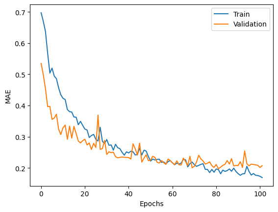
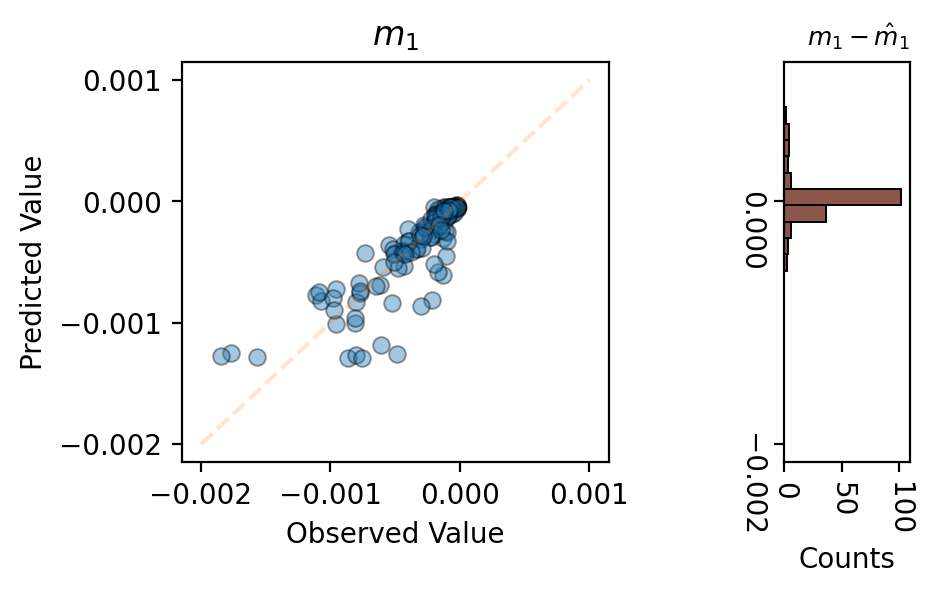
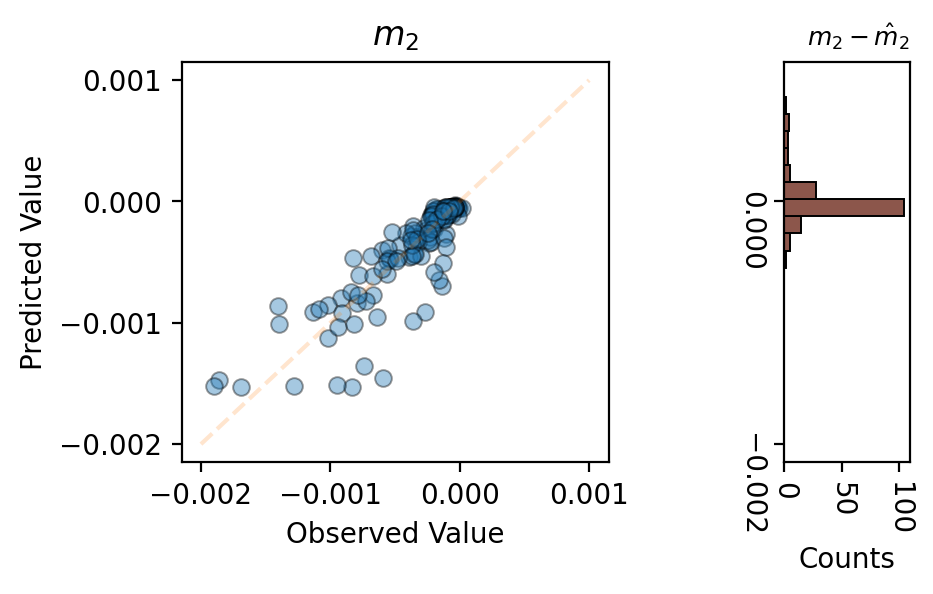
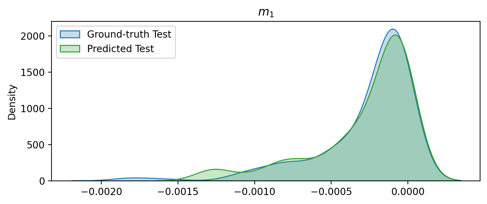
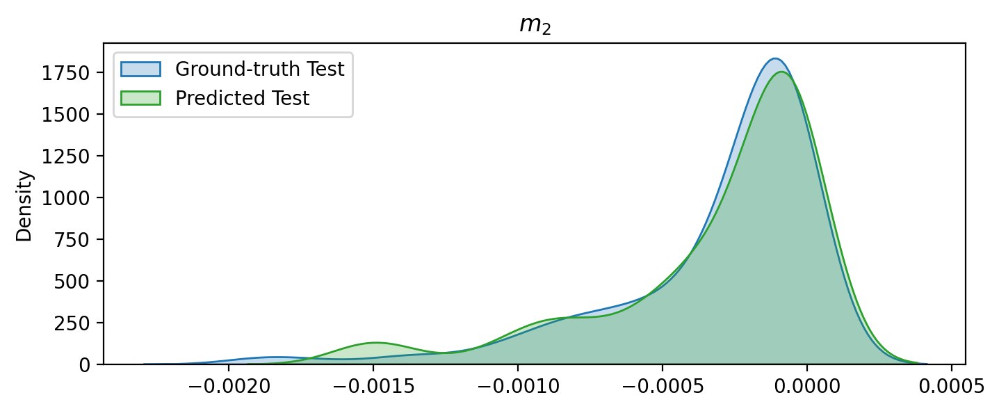

Quick start
import os
import bye_cycle
import tensorflow as tf
# Disabling tf warnings
tf.get_logger().setLevel('INFO')
from tqdm import tqdm
import numpy as np
import pickle as pkl
import matplotlib.pyplot as plt
from beep.structure.cli import auto_load_processed
import random
print("Num GPUs Available: ", len(tf.config.list_physical_devices('GPU')))
import seaborn as sns
Num GPUs Available: 1
input_window_size = 50
output_window_size = 50
pkl_f_l_filename = f'CACHED_DATA/pickled_cycle_windows/LFP/fearures_labels_inputs_window_{input_window_size}_outputs_window_{output_window_size}.pkl'
with open(pkl_f_l_filename, 'rb') as f:
[cell_features, cell_labels] = pkl.load(f)
scaled_X_train_time_series, scaled_slopes_train, scaled_X_val_time_series, scaled_slopes_val, scaled_X_test_time_series, scaled_slopes_test, f_scaler, l_scaler = bye_cycle.process_data(cell_features, cell_labels, seed=0, train_size=0.9, val_size=0.2)
Train size:100
Validation size:25
Test size:14
Total cells: 139
hyper_params = bye_cycle.DegredationModelHyperParams(reg_strength=0)
model = bye_cycle.DegredationModel(hyper_params)
model.compile()
model.summary()
Model: "model"
_________________________________________________________________
Layer (type) Output Shape Param #
=================================================================
input_1 (InputLayer) [(None, 50, 100, 2)] 0
time_distributed (TimeDistr (None, 50, 1, 32) 6432
ibuted)
time_distributed_1 (TimeDis (None, 50, 1, 32) 0
tributed)
time_distributed_2 (TimeDis (None, 50, 32) 0
tributed)
bidirectional (Bidirectiona (None, 50, 64) 16640
l)
bidirectional_1 (Bidirectio (None, 64) 24832
nal)
dense (Dense) (None, 32) 2080
layer_normalization (LayerN (None, 32) 64
ormalization)
dropout_1 (Dropout) (None, 32) 0
dense_1 (Dense) (None, 16) 528
layer_normalization_1 (Laye (None, 16) 32
rNormalization)
dropout_2 (Dropout) (None, 16) 0
dense_2 (Dense) (None, 2) 34
=================================================================
Total params: 50,642
Trainable params: 50,642
Non-trainable params: 0
_________________________________________________________________
model.fit(scaled_X_train_time_series, scaled_slopes_train,
validation_data=(scaled_X_val_time_series, scaled_slopes_val), verbose=0, epochs=200)
plt.figure(dpi=100, facecolor='white')
plt.plot(model.history.history['loss'], color='C0', label='Train')
plt.plot(model.history.history['val_loss'], color='C1', label='Validation')
plt.legend()
plt.ylabel('MAE')
plt.xlabel('Epochs')
Text(0.5, 0, 'Epochs')

slope_mae = model.evaluate(scaled_X_test_time_series, scaled_slopes_test)
Y_hat_test_scaled = model.predict(scaled_X_test_time_series)
Y_hat_test = l_scaler.inverse_transform(Y_hat_test_scaled)
slopes_test = l_scaler.inverse_transform(scaled_slopes_test)
6/6 [==============================] - 0s 21ms/step - loss: 0.2727
6/6 [==============================] - 1s 13ms/step
from matplotlib.gridspec import GridSpec
gs = GridSpec(5,5, hspace=5)
fig = plt.figure(figsize=(4.7, 5), dpi=200, facecolor='white')
ax_joint = fig.add_subplot(gs[1:4,0:3])
ax_marg_y = fig.add_subplot(gs[1:4,4])
ax_joint.scatter(slopes_test[:,0], Y_hat_test[:,0], alpha=0.4, edgecolor='k', linewidth=0.7)
ax_joint.plot([-0.002,0.001], [-0.002,0.001], color='C1', alpha=0.2, linestyle='--')
ax_joint.set_title(r'$m_1$')
ax_joint.set_xlabel('Observed Value')
ax_joint.set_ylabel('Predicted Value')
ax_joint.locator_params(nbins=4)
ymin, ymax = ax_joint.get_ylim()
err = slopes_test[:,0] - Y_hat_test[:,0]
ax_marg_y.hist(err, bins=10, orientation="horizontal", edgecolor='black', linewidth=0.7, color ='C5');
ax_marg_y.set_xlabel('Counts')
ax_marg_y.set_title(r'$m_1 - \hat{m}_1$', fontsize=9, loc='right')
ax_marg_y.tick_params(rotation=-90)
ax_marg_y.locator_params(nbins=3)
ax_marg_y.set_ylim([ymin, ymax])
ax_marg_y.set_xlim([0, 110])
(0.0, 110.0)

gs = GridSpec(5,5, hspace=5)
fig = plt.figure(figsize=(4.7, 5), dpi=200, facecolor='white')
ax_joint = fig.add_subplot(gs[1:4,0:3])
ax_marg_y = fig.add_subplot(gs[1:4,4])
ax_joint.scatter(slopes_test[:,1], Y_hat_test[:,1], alpha=0.4, edgecolor='k', linewidth=0.7)
ax_joint.plot([-0.002,0.001], [-0.002,0.001], color='C1', alpha=0.2, linestyle='--')
ax_joint.set_title(r'$m_2$')
ax_joint.set_xlabel('Observed Value')
ax_joint.set_ylabel('Predicted Value')
ax_joint.locator_params(nbins=4)
ymin, ymax = ax_joint.get_ylim()
err = slopes_test[:,1] - Y_hat_test[:,1]
ax_marg_y.hist(err, bins=10, orientation="horizontal", edgecolor='black', linewidth=0.7, color ='C5');
ax_marg_y.set_xlabel('Counts')
ax_marg_y.set_title(r'$m_2 - \hat{m}_2$', fontsize=9, loc='right')
ax_marg_y.tick_params(rotation=-90)
ax_marg_y.locator_params(nbins=3)
ax_marg_y.set_ylim([ymin, ymax])
(-0.00215, 0.00115)

fig, ax = plt.subplots(1, dpi=200, figsize=(8,3), facecolor='white')
sns.kdeplot(slopes_test[:,0], alpha=0.25, label='Ground-truth Test', color='C0', fill=True)
sns.kdeplot(Y_hat_test[:,0], alpha=0.25, label='Predicted Test', color='C2', fill=True)
ax.set_title(r'$m_1$')
plt.legend(loc='upper left')
ymin, ymax = plt.ylim()
xmin, xmax = plt.xlim()

fig, ax = plt.subplots(1, dpi=200, figsize=(8,3), facecolor='white')
sns.kdeplot(slopes_test[:,1], alpha=0.25, label='Ground-truth Test', color='C0', fill=True)
sns.kdeplot(Y_hat_test[:,1], alpha=0.25, label='Predicted Test', color='C2', fill=True)
ax.set_title(r'$m_2$')
plt.legend(loc='upper left')
ymin, ymax = plt.ylim()
xmin, xmax = plt.xlim()
